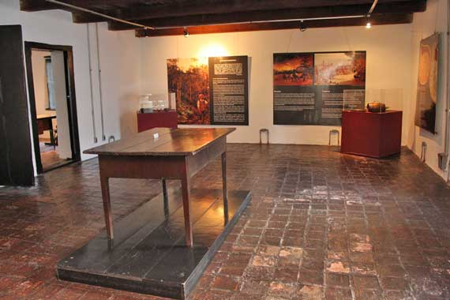

Arquitetura da Casa do Tatuapé
Ver transcrição em texto
"A Casa do Tatuapé é um raro exemplar da arquitetura colonial do século XVII em São Paulo, construída com a técnica tradicional de taipa de pilão. Características Arquitetônicas • Estrutura de Taipa de Pilão: As paredes grossas e resistentes foram erguidas com barro socado entre fôrmas de madeira, utilizando materiais retirados da própria região próxima ao Rio Tietê. • Telhado de Duas Águas: Diferente de outras construções bandeiristas da época que usavam telhados em quatro águas, a casa destaca-se por sua cobertura com dois planos inclinados simétricos. • Planta Interna: O espaço conta com seis cômodos principais e dois sótãos. • Janelas sem Vidro: As aberturas possuem grades de madeira maciça e grandes vãos projetados para garantir a ventilação natural e a proteção contra intempéries e animais, sem o uso de vidros (tecnologia escassa no período). • Pisos e Materiais: O piso original era formado por tijolos assentados de maneira rústica diretamente sobre o barro batido. "
Contexto Histórico
. Registrada em 1698, foi construída por Mathias Rodrigues da Silva em terreno do padre Matheus Nunes de Siqueira.
No século XIX, abrigou uma olaria que produzia telhas e, com a imigração italiana, também tijolos.